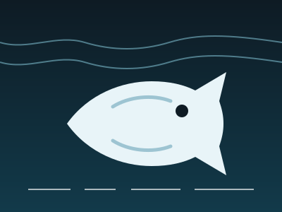
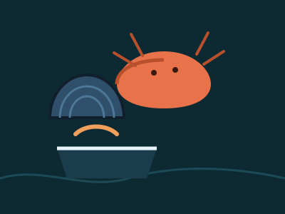
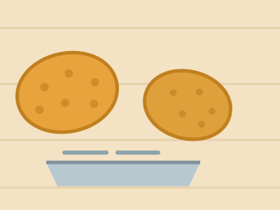
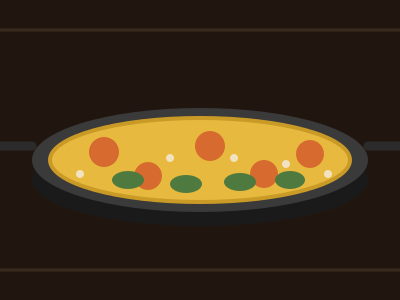
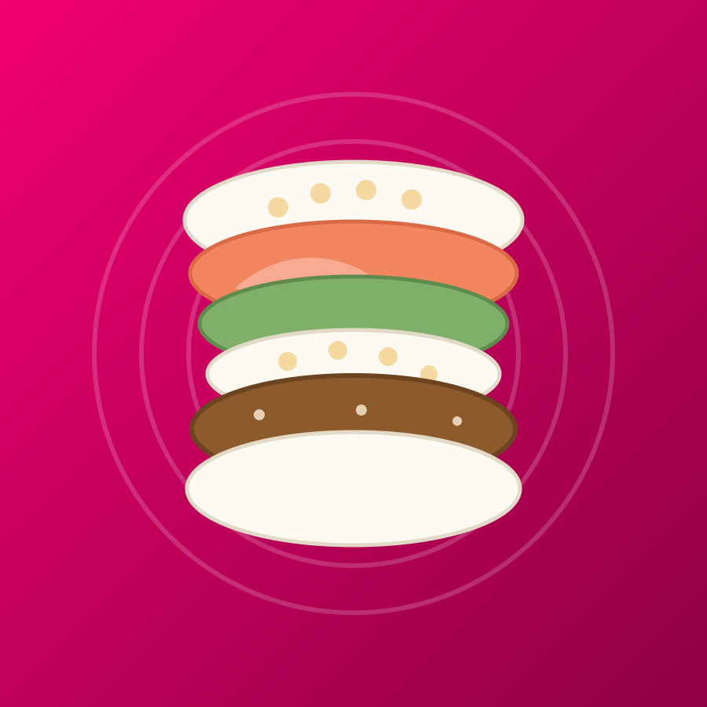
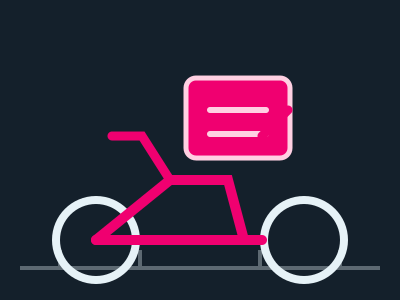
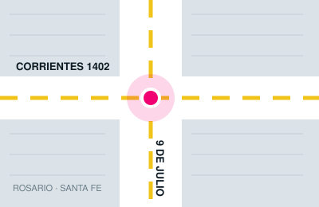

Pescado fresco por kilo
Merluza, boga, cornalitos y lo que marque la temporada. Se despacha por kilo, limpio o entero, como lo necesites.
Abierto hasta las 20:45
En Las Caracolas el pescado se corta el día que se vende. Merluza, boga, cornalitos y lo que marque la temporada, mariscos, rebozados listos para la sartén, platos preparados de rotisería y la Sushi Burguer que dicen haber creado en Argentina.
Atendemos a particulares y a otros locales, por mayor y por menor. Hacé tu pedido por WhatsApp y lo tenés listo para retirar en Corrientes 1402, esq. 9 de Julio, o te lo llevamos a domicilio.
Dirección: Corrientes 1402, esq. 9 de Julio — S2000 Rosario, Santa Fe Teléfono: 0341 637-8697

Fresco del día
Lo que llega fresco se vende por kilo y se corta en el momento. El mostrador cambia con la temporada, así que si buscás algo puntual lo mejor es preguntar antes de pasar.
Merluza, boga, cornalitos y lo que marque la temporada. Se despacha por kilo, limpio o entero, como lo necesites.
Enteros, pelados, media valva y cazuela. Ideales para una salsa, una cazuela de mariscos o una picada de mar.
Como trabajamos con pescado fresco, la variedad depende del día. Si necesitás algo para una fecha especial, encargalo por WhatsApp y te lo reservamos.

Los mariscos se venden enteros, pelados, en media valva y también como base de cazuela ya preparada. Si vas a cocinar para muchos, conviene encargarlo con anticipación.
Atendemos por mayor y por menor: si tenés un local gastronómico, consultanos por el precio para tu volumen.
Listos para cocinar
El catálogo que antes circulaba como PDF ahora vive acá. Todo lo que ves en esta sección sale del mostrador ya preparado: llega a tu casa listo para pasar por la sartén o por el horno.
Los precios cambian con el mercado y no se publican en el sitio. Consultá el precio del día por WhatsApp antes de pasar.

Para llevar
La rotisería es la cocina de Las Caracolas. Platos preparados listos para llevar y paella, para resolver la comida sin cocinar y sin esperar.

La propuesta de rotisería se arma todos los días con lo que hay en el mostrador, así que conviene preguntar qué hay hoy antes de pasar.
La paella se prepara por encargo y es una de las opciones más pedidas para el fin de semana. Encargala por WhatsApp con la anticipación que te indiquemos y la retirás en el local o la recibís en tu casa.
La casa de la Sushi Burguer
Dicen ser los creadores de la Sushi Burguer en Argentina. Es una hamburguesa armada con tapas de arroz, relleno de salmón y palta: se come con las manos y se pide por WhatsApp o por delivery.
La pieza insignia de la casa. Si es tu primera vez, empezá por acá. La armamos al momento y sale con la salsa de la casa.
Además de la Sushi Burguer armamos combos para compartir. Contanos para cuántos son y te recomendamos el combo que mejor cierra.

Llega a tu casa
Tenés dos caminos para pedir. Por WhatsApp coordinamos directo con el local, que es la vía más rápida para encargues y pedidos grandes. Por PedidosYa pedís desde la app, con las dos tiendas de Las Caracolas en Rosario.
Escribinos con lo que querés y te confirmamos disponibilidad y precio del día. Coordinamos retiro en Corrientes 1402 o envío a domicilio.
Las Caracolas tiene dos tiendas en PedidosYa: una de pescadería y rotisería, y otra de sushi. Elegí la que corresponda a lo que querés pedir.
Atendemos a particulares y también a otros locales. Si tenés un restaurante, una rotisería o un almacén, consultanos por el precio por mayor.

El reparto lo hacemos dentro de Rosario. El horario de atención es hasta las 20:45, así que conviene hacer el pedido con margen para que llegue el mismo día.
Si preferís no esperar, podés retirar por el local en Corrientes 1402, esq. 9 de Julio.
Dónde estamos
Estamos en la esquina de Corrientes y 9 de Julio, en Rosario. Podés pasar por el local, llamarnos por teléfono o escribirnos por WhatsApp.

Dejanos tu consulta y te respondemos. Si tenés apuro, el camino más rápido sigue siendo WhatsApp o el teléfono.
Escribinos por WhatsApp con lo que necesitás y te confirmamos disponibilidad y precio del día. Retirás en Corrientes 1402, esq. 9 de Julio, o te lo llevamos a domicilio.